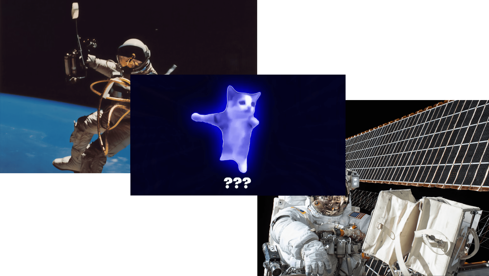

on November 8th, 2015, Twitter user @1Nssu uploaded a video of a kitten excitedly jumping behind a glass door, with caption roughly translated as "Pet shop I frequently visited is closing down… Wish I could take him home." The video received more than
48,600 reposts and 100,000 likes in nine years (shown below). On November 11th, 2015, Imgur[1] user Datsun280zxt reposted the video and received more than 23,500 points and 5.5 million views in the two days after it was uploaded; however,
the video was later deleted.
©2023 Joyful Cat, All Right Reserved.